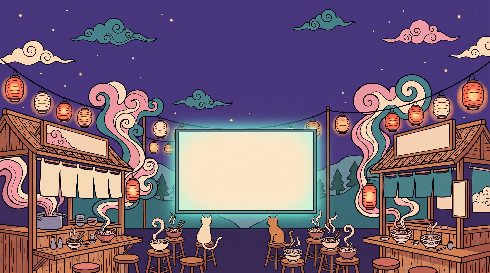

✦ 30 seconds ✦
Your local AI never forgets.
A 30-second look at the RAMen app: chats that come back in seconds after a restart, and stay fast.

A 30-second look at the RAMen app: chats that come back in seconds after a restart, and stay fast.